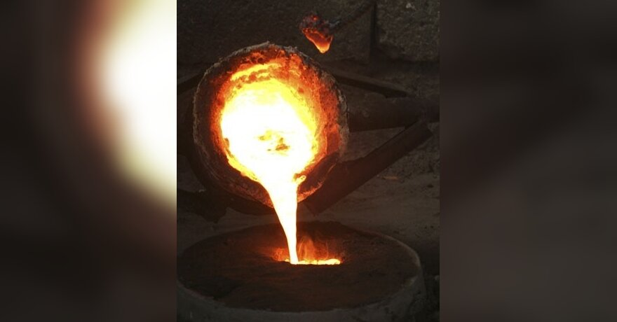

Geležis
Prašome palaukti
Apie eurovaistinę Pirk internetu konsultacijos internetu E-vaistinės klientų aptarnavimas 8 5 260 2200 Susisiekite su vaistine Prisijungimas Pirkti 0 0,00 € Jūsų prekes pristatysime nuo 0,00 € Odos ir plaukų kosmetika Greita paieška BB kremai CC kremai Sausi šampūnai Brandžiai veido odai Nuo plaukų slinkimo Dermatologinė kosmetika Miceliniai vandenys Veido kaukės Jautriai veido odai Naujienos asortimente SAVAIMINIO ĮDEGIO PRIEMONĖS SAULĖS kosmetika Tonuojantys šampūnai ir kondicionieriai Prekės VYRAMS Eteriniai aliejai ❗ ❗ ❗ Apsauginės veido kaukės Atgal Odos ir plaukų kosmetika Veido odos priežiūra Atgal Veido odos priežiūra Lūpų priežiūros priemonės Makiažo valymo priemonės ir tonikai Paakių priežiūros priemonės Veido kaukės Veido kremai Veido prausikliai ir šveitikliai Veido serumai ir ampulės Veido dulksnos Rinkiniai veido odos priežiūrai Plaukų priežiūra Atgal Plaukų priežiūra Šampūnai Aliejai ir kaukės plaukams Kondicionieriai Plaukų dažai Plaukų lakai, putos, kremai Rinkiniai plaukų priežiūrai Tonuojančios priemonės plaukams Šepečiai, šukos ir prietaisai Serumai, ampulės ir tirpalai plaukams Kūno odos priežiūra Atgal Kūno odos priežiūra Aliejai kūnui ir masažui Saulės kosmetika Depiliacinės ir skutimosi priemonės Dezodorantai Kremai, losjonai ir kaukės Rinkiniai Kojų ir rankų priežiūros priemonės Nauja! Manikiūro, pedikiūro įrankiai Dušo geliai, šveitikliai ir muilai Savaiminio įdegio priemonės Kosmetika vyrams Atgal Kosmetika vyrams Dezodorantai vyrams Kūno prausikliai vyrams Plaukų priežiūros priemonės vyrams Skutimosi priemonės vyrams Veido kremai ir prausikliai Nauja! Barzdos priežiūra Namų SPA Atgal Namų SPA Nauja! Kempinės, plaušinės Namų kvapai Vonios putos, druskos, burbulai Masažo priemonės Dekoratyvinė kosmetika Greita paieška BB kremai CC kremai Brandžiai odai Riebiai odai Matiniai lūpų dažai Blakstienas ilginantys tušai ❗ Naujienos asortimente ❗ SAVAIMINIO ĮDEGIO PRIEMONĖS SAULĖS kosmetika ❗ Tonuojantys šampūnai ir kondicionieriai Prekės VYRAMS Eteriniai aliejai ❗❗❗ Apsauginės veido kaukės Atgal Dekoratyvinė kosmetika Priemonės veidui Atgal Priemonės veidui Makiažo pagrindai Maskuojamosios priemonės Sausos ir birios pudros Skaistalai ir bronzantai Priemonės akims Atgal Priemonės akims Tušai Pieštukai ir apvadai Šešėliai Priemonės blakstienoms ir antakiams, pincetai Priemonės lūpoms Atgal Priemonės lūpoms Lūpų dažai Lūpų blizgesiai Lūpų pieštukai Lūpų kaukės Priemonės nagams Atgal Priemonės nagams Nagų lakai Nagų lako valikliai Aksesuarai Atgal Aksesuarai Šepetėliai, teptukai ir drožtukai Kempinėlės ir padeliai Kelioninių indelių rinkiniai Kosmetinės Kvepalai Atgal Kvepalai Kvepalai moterims Kvepalai vyrams Vitaminai ir maisto papildai Greita paieška Odai, plaukams, nagams Svorio kontrolei Menopauzei Žuvų taukai Probiotikai Vitaminas D Vitaminas C Naujienos asortimente INOVATYVŪS (Inhaliuojami) vitaminai ❗❗❗ PURŠKIAMI maisto papildai Prekės VYRAMS ❗❗❗ Apsauginės veido kaukės Supermaistas ir skysti maisto papildai Atgal Vitaminai ir maisto papildai Gerai savijautai Atgal Gerai savijautai Žuvų taukai ir omega-3 Imunitetui Atminčiai ir smegenų veiklai Cholesterolio kiekiui mažinti Raumenims, sanariams Širdžiai ir kraujotakai Akims Probiotikai Nervų sistemai Virškinimui/kepenims Diabetui Šlapimo takams Vitaminai ir mineralai Atgal Vitaminai ir mineralai Magnis Vitaminas D Kompleksai Vitaminas C Vitaminas B Kalcis Kalis Geležis Grožiui ir sportui Atgal Grožiui ir sportui Energijai Antioksidantai Odai, plaukams ir nagams Papildai sportui Svorio kontrolei Šeimai Atgal Šeimai Besilaukiančioms ir maitinančioms Kūdikiams Moterims Senjorams Vaikams ir paaugliams Vyrams Arbatos ir specializuotas maistas Atgal Arbatos ir specializuotas maistas Arbatos Supermaistas Gliukozė, pastilės, saldikliai Hematogenai, batonėliai Sultys Vaikui ir mamai Greita paieška Sauskelnės Buteliukai Čiulptukai Vaikiškos dantų pastos Vitaminai mamytėms Nuo uodų ir vabzdžių Saulės kosmetika vaikams Vaikų peršalimas PURŠKIAMI maisto papildai Smagios prekės VAIKAMS ❗❗❗ Apsauginės veido kaukės Atgal Vaikui ir mamai Kosmetika kūdikiams ir vaikams Atgal Kosmetika kūdikiams ir vaikams Prausikliai ir muilas vaikams Priemonės nuo iššutimų kūdikiams Putos, minkštikliai vaikų vonelėms Šampūnai vaikams Kūno odos priežiūros priemonės Vaikų odos apsauga nuo saulės Priemonės dantenoms Besilaukiančioms ir maitinančioms Atgal Besilaukiančioms ir maitinančioms Diržai besilaukiančioms ir pagimdžiusioms Kelnaitės ir pėdkelnės besilaukiančioms Kremai ir kompresai speneliams Liemenėlės įklotai ir antspeniai Rinkiniai po gimdymo Kūdikių ir vaikų prekės Atgal Kūdikių ir vaikų prekės Pientraukiai, maišeliai ir indeliai motinos pienui laikyti Buteliukai, šildikliai ir žindukai Čiulptukai ir kramtukai Kūdikių priežiūros įrankiai Puodeliai, indeliai ir seilinukai Nauja! Žaislai Rinkiniai kūdikiams ir vaikams Kūdikių ir vaikų maistas Atgal Kūdikių ir vaikų maistas Pieno mišinukai Košės kūdikiams Tyrelės Vaikiškos arbatos Kūdikių ir vaikų higiena Atgal Kūdikių ir vaikų higiena Nauja! Burnos higiena vaikams Sauskelnės kūdikiams Drėgnos servetėlės kūdikiams Paklotai Nosies aspiratoriai Higiena Greita paieška Dantų balinimui Jautriems dantims Elektriniai dantų šepetėliai Prezervatyvai ir kita kontracepcija ❗❗❗ Apsauginės veido kaukės Atgal Higiena Moters higiena Atgal Moters higiena Intymios higienos prausikliai Intymios higienos servetėlės Įklotai Nauja! Kelnaitės Paketai Tamponai Kitos priemonės nuo nemalonių pojūčių Dubens raumenų stiprinimui Menstruacinės taurelės Burnos higiena Atgal Burnos higiena Dantų balinimo sistemos Dantų pastos Dantų šepetėliai Protezų ir plokštelių priežiūra Skalavimo skysčiai ir burnos gaivikliai Tarpdančių šepetėliai, siūlai ir krapštukai Geliai ir tepalai burnos ertmei Rinkiniai Suaugusiųjų slauga Atgal Suaugusiųjų slauga Drėgnos servetėlės Įklotai nelaikant šlapimo Kremai ir tepalai Prausikliai ir valikliai Paklotai ir klijuotės Sauskelnės suaugusiesiems Tinklinės kelnaitės Žaizdų priežiūrai ir tvarstymui Basonai, šlapimo surinkimo maišeliai Šeimos planavimui Atgal Šeimos planavimui Prezervatyvai Nėštumo ir ovuliacijos testai Vietiškai vartojami kontraceptikai Skubi kontracepcija Lubrikantai Intymios prekės Asmens higiena Atgal Asmens higiena Respiratoriai ir kaukės Dezinfekciniai skysčiai Drėgnos servetėlės, nosinaitės, tualetinis popierius Medicinos priemonės ir technika Greita paieška Žaizdų gydymui Preparatai gerklei Moters lytinei sveikatai Termometrai Įtvarai Nuo uodų ir vabzdžių ❗❗❗ Apsauginės veido kaukės ❗ Diagnostiniai testai NAMUOSE Atgal Medicinos priemonės ir technika Diagnostika, testai Atgal Diagnostika, testai Gliukomačiai Inhaliatoriai ir jų priedai Gliukozės juostelės, lancetai, pompos Masažuokliai Svarstyklės Šildomosios paklodės ir pagalvės Termometrai Testai ir indeliai tyrimams Žingsniamačiai Specialios paskirties priemonės Ortopedinės prekės Atgal Ortopedinės prekės Elastiniai tvarsčiai Įtvarai, laikikliai ir diržai Kompresinės pėdkelnės, pirštinės, kojinės nuo varikozės Kulnų ir pirštų apsaugos, tarpupirščių plėtikliai Vidpadžiai Kraujospūdžio matuokliai Atgal Kraujospūdžio matuokliai Automatiniai kraujospūdžio matuokliai Kraujospūdžio matuoklių detalės Mechaniniai kraujospūdžio matuokliai Riešiniai kraujospūdžio matuokliai Optikos prekės Atgal Optikos prekės Kontaktiniai lęšiai Kontaktinių lęšių skysčiai Lašai, tepalai ir lubrikantai akims Vaistinėlė/skubi pagalba Atgal Vaistinėlė/skubi pagalba Dėžutės ir taurelės vaistams Skubi pagalba Kompresai, šildyklės ir šaldyklės Nosies ir ausų priežiūros priemonės Odos antiseptikai ir amoniakas Pirmosios pagalbos vaistinėlės Pleistrai Repelentai Švirkštai, kateteriai, pirštinės ir klizmos Tvarsčiai ir vata Nosinaitės, servetėlės, maišeliai Priemonės karpoms Vaistai (nereceptiniai) Greita paieška Galvos skausmas Mėnesinių skausmas Nuo slogos Vaikų peršalimas Peršalimas Nuo nagų grybelio ❗ Nuo alergijos Nuo uodų ir vabzdžių Atgal Vaistai (nereceptiniai) Sveikatos sutrikimai Atgal Sveikatos sutrikimai Akims Alergija Dantenoms ir burnos gleivinei Diabetas, nutukimas Hemorojus Kaulams, sąnariams ir raumenims Kojų kraujotakai ir venoms Lūpų pūslelinė Nuo streso, nemigos ir įtampos Odos sužeidimai, opos ir kitos ligos Pagirios, rūkymas ir knarkimas Parazitų ir jų sukeliamų infekcijų gydymui, naikinimui Smegenų kraujotakai ir atminčiai Širdžiai ir kraujotakai Šlapimo sistemos sutrikimams Šeimos sveikata Atgal Šeimos sveikata Vaikų virškinimo sutrikimai Vaikų peršalimas Moters lytinei sveikatai Vaikų kitos ligos ir negalavimai Vyro lytinei sveikatai Virškinimo sutrikimai Atgal Virškinimo sutrikimai Kepenų ir tulžies veiklai Nuo pilvo pūtimo ir spazmų Nuo rėmens ir padidėjusio rūgštingumo Nuo viduriavimo Nuo vidurių užkietėjimo Probiotikai ir kiti preparatai žarnyno mikroflorai Sklandžiam virškinimui Gripas ir peršalimas Atgal Gripas ir peršalimas Ausies skausmas, uždegimas Galvos skausmas ir temperatūra Gerklės skausmas Nuo kosulio Nuo slogos Peršalimo simptomams malšinti Vaistai nuo skausmo Atgal Vaistai nuo skausmo Galvos skausmas Ausų skausmas Pilvo ir menstruacijų skausmas Raumenų, sąnarių skausmas Pleistrai nuo skausmo Traumoms gydyti Akcijos Atgal Akcijos Tik internete TOP pasiūlymai Mėnesio pasiūlymai Išpardavimas % Vaistinės Apie Eurovaistinę konsultacijos internetu Patarimai ir straipsniai × 0 Eurovaistine.lt Vitaminai ir maisto papildai Vitaminai ir mineralai Geležis Geležis Filtras ×Geležis
e-pasiūlymas BLUEIRON skystoji geležis, mėlynių skonio, 330 ml Maisto papildas -25% e-pasiūlymas BLUEIRON skystoji geležis, mėlynių skonio, 330 ml Maisto papildas Prekė sandėlyje 14,92 € 19,90 € www.eurovaistine.lt prieš akciją galiojusi įprastinė kaina. -25% e-pasiūlymas RICHTER FERROBIO, 40 tablečių Maisto papildas -25% e-pasiūlymas RICHTER FERROBIO, 40 tablečių Maisto papildas Prekė sandėlyje 14,24 € 18,99 € www.eurovaistine.lt prieš akciją galiojusi įprastinė kaina. -25% e-pasiūlymas LIVE WELL FERRUM + B12 PLUS skystis, 250 ml Maisto papildas -25% e-pasiūlymas LIVE WELL FERRUM + B12 PLUS skystis, 250 ml Maisto papildas Prekė sandėlyje 9,73 € 12,97 € www.eurovaistine.lt prieš akciją galiojusi įprastinė kaina. -25% Top LIVE WELL FERRUM + B12, 30 minkštų kapsulių Maisto papildas -25% Top LIVE WELL FERRUM + B12, 30 minkštų kapsulių Maisto papildas Prekė sandėlyje 8,98 € 11,97 € www.eurovaistine.lt prieš akciją galiojusi įprastinė kaina. -25% e-pasiūlymas FEROGLOBIN, vaisių skonio, 200 ml Maisto papildas -25% e-pasiūlymas FEROGLOBIN, vaisių skonio, 200 ml Maisto papildas Prekė sandėlyje 9,97 € 13,30 € www.eurovaistine.lt prieš akciją galiojusi įprastinė kaina. -25% e-pasiūlymas FEROGLOBIN, 30 kapsulių Maisto papildas -25% e-pasiūlymas FEROGLOBIN, 30 kapsulių Maisto papildas Prekė sandėlyje 10,00 € 13,34 € www.eurovaistine.lt prieš akciją galiojusi įprastinė kaina. -25% e-pasiūlymas TECNOFER šnypščiosios tabletės su saldikliais, 30 šnypščiųjų tablečių Maisto papildas -25% e-pasiūlymas TECNOFER šnypščiosios tabletės su saldikliais, 30 šnypščiųjų tablečių Maisto papildas Prekė sandėlyje 12,74 € 16,99 € www.eurovaistine.lt prieš akciją galiojusi įprastinė kaina. -25% e-pasiūlymas TECNOFER lašai vaikams BAMBINI, 30 ml+Pipetė, 1 vnt. Maisto papildas -25% e-pasiūlymas TECNOFER lašai vaikams BAMBINI, 30 ml+Pipetė, 1 vnt. Maisto papildas Prekė sandėlyje 12,69 € 16,92 € www.eurovaistine.lt prieš akciją galiojusi įprastinė kaina. -25% e-pasiūlymas FLORADIX FLORAVITAL, 250 ml+dozavimo taurelė Maisto papildas -25% e-pasiūlymas FLORADIX FLORAVITAL, 250 ml+dozavimo taurelė Maisto papildas Prekė sandėlyje 9,74 € 12,99 € www.eurovaistine.lt prieš akciją galiojusi įprastinė kaina. -25% e-pasiūlymas FLORADIX skystosios geležies formulė, 500 ml Maisto papildas -25% e-pasiūlymas FLORADIX skystosios geležies formulė, 500 ml Maisto papildas Prekė sandėlyje 16,00 € 21,34 € www.eurovaistine.lt prieš akciją galiojusi įprastinė kaina. -25% e-pasiūlymas FLORADIX skystosios geležies formulė, 250 ml Maisto papildas -25% e-pasiūlymas FLORADIX skystosios geležies formulė, 250 ml Maisto papildas Prekė sandėlyje 8,99 € 11,99 € www.eurovaistine.lt prieš akciją galiojusi įprastinė kaina. -25% e-pasiūlymas bioFERRUM ACEROLA LT-EKO-001, 28 pakeliai Maisto papildas -25% e-pasiūlymas bioFERRUM ACEROLA LT-EKO-001, 28 pakeliai Maisto papildas Prekė sandėlyje 8,59 € 11,46 € www.eurovaistine.lt prieš akciją galiojusi įprastinė kaina. -25% e-pasiūlymas FEROGLOBIN PLUS, 200 ml Maisto papildas -25% e-pasiūlymas FEROGLOBIN PLUS, 200 ml Maisto papildas Prekė sandėlyje 10,24 € 13,65 € www.eurovaistine.lt prieš akciją galiojusi įprastinė kaina. -25% e-pasiūlymas RABENHORST sultys EISENBLUT, 450 ml Maisto papildas -25% e-pasiūlymas RABENHORST sultys EISENBLUT, 450 ml Maisto papildas Prekė sandėlyje 8,24 € 10,99 € www.eurovaistine.lt prieš akciją galiojusi įprastinė kaina. -25% e-pasiūlymas SMART HIT IV FERRUM, 30 kapsulių Maisto papildas -25% e-pasiūlymas SMART HIT IV FERRUM, 30 kapsulių Maisto papildas Prekė sandėlyje 13,40 € 17,87 € www.eurovaistine.lt prieš akciją galiojusi įprastinė kaina. -25% e-pasiūlymas DOPPELHERZ AKTIV IRON-FEMIN DIRECT, miško uogų skonio, nuo 14 m., 20 pakelių Maisto papildas -25% e-pasiūlymas DOPPELHERZ AKTIV IRON-FEMIN DIRECT, miško uogų skonio, nuo 14 m., 20 pakelių Maisto papildas Prekė sandėlyje 6,48 € 8,64 € www.eurovaistine.lt prieš akciją galiojusi įprastinė kaina. -25% e-pasiūlymas TECNOFER PLUS kapsulės (be glitimo ir laktozės), 20 kapsulių Maisto papildas -25% e-pasiūlymas TECNOFER PLUS kapsulės (be glitimo ir laktozės), 20 kapsulių Maisto papildas Prekė sandėlyje 14,24 € 18,99 € www.eurovaistine.lt prieš akciją galiojusi įprastinė kaina. -25% e-pasiūlymas E-prekė NORDAID purškiamas geležies papildas IRON SPRAY, 5mg, 30 ml Maisto papildas -25% e-pasiūlymas E-prekė NORDAID purškiamas geležies papildas IRON SPRAY, 5mg, 30 ml Maisto papildas Prekė sandėlyje 14,24 € 18,99 € www.eurovaistine.lt prieš akciją galiojusi įprastinė kaina. -25% e-pasiūlymas SMART HIT IV FERRUM LIQUID, melionų skonio, 150 ml Maisto papildas -25% e-pasiūlymas SMART HIT IV FERRUM LIQUID, melionų skonio, 150 ml Maisto papildas Prekė sandėlyje 13,87 € 18,49 € www.eurovaistine.lt prieš akciją galiojusi įprastinė kaina. -25% e-pasiūlymas Naujiena E-prekė FERACHEL FORTE, nuo 18 m., 24 dengtos tabletės Maisto papildas -25% e-pasiūlymas Naujiena E-prekė FERACHEL FORTE, nuo 18 m., 24 dengtos tabletės Maisto papildas Prekė sandėlyje 17,24 € 22,99 € www.eurovaistine.lt po akcijos ketinama taikyti kaina -25% e-pasiūlymas Naujiena E-prekė FERROGUNA POWDER, 28 pakeliai Maisto papildas -25% e-pasiūlymas Naujiena E-prekė FERROGUNA POWDER, 28 pakeliai Maisto papildas Prekė sandėlyje 11,24 € 14,99 € www.eurovaistine.lt po akcijos ketinama taikyti kaina -25% e-pasiūlymas Naujiena E-prekė LATTOGLOBINA, 30 kapsulių Maisto papildas -25% e-pasiūlymas Naujiena E-prekė LATTOGLOBINA, 30 kapsulių Maisto papildas Prekė sandėlyje 19,49 € 25,99 € www.eurovaistine.lt po akcijos ketinama taikyti kaina -25% Išpardavimas EISEN VITAL F DIREKT, vaisių skonio, 20 paketėlių Maisto papildas -50% Išpardavimas EISEN VITAL F DIREKT, vaisių skonio, 20 paketėlių Maisto papildas Prekė sandėlyje 6,49 € 12,99 € www.eurovaistine.lt prieš akciją galiojusi įprastinė kaina. -50% Naujiena E-prekė TRACE MINERALS skysta joninė geležis su mineralais, 59 ml Maisto papildas Naujiena E-prekė TRACE MINERALS skysta joninė geležis su mineralais, 59 ml Maisto papildas Prekė sandėlyje 22,90 € Puslapyje rodyti po 24 48 96 1 (current) 2 Vaistinės Apie Eurovaistinę Patarimai ir straipsniai Akcijos Patarimai ir straipsniai 10 priežasčių, kodėl verta pradėti naudoti menstruacines taureles OrganiCup menstruacinė taurelė atsirado tam, kad pasiliktų ilgam. Be abejo, iš pradžių gali būti šiek tiek nedrąsu žengti lemiamą žingsnį. Gal šiek ti... Ką naudinga žinoti apie OLAPLEX? Plaukų priemonės OLAPLEX daliai žmonių tapo kodu reiškiančiu profesionalią pagalbą plaukams, tačiau kuo iš tiesų naudingos šio prekinio ženklo priemon... Patarimai dirbantiems sėdimą darbą Žmonės, ko gero, dar niekada nesėdėjo tiek daug, kiek šiandien. Didžiąją dalį darbo dienos leidžia palinkę prie kompiuterių, o grįžę namo taip pat nev... Gera savijauta kasdien Ekologija ir natūralumas (11) Kūdikių ir vaikų sveikata bei priežiūra (18) Kūno higiena ir slauga (3) Lytinė sveikata (19) Namų vaistinėlė (9) daugiau temų Grožis ir estetika Kūno oda ir jos problemos (29) Lieknėjimas ir mankšta (14) Plaukai ir jų priežiūra (22) Raukšlės ir jų prevencija (17) Sausa ir jautri oda (13) daugiau temų Ligos, simptomai ir jų gydymas Alergija (4) Ginekologija ir urologija (16) Kūdikių ir vaikų ligos (10) Ligų simptomai (18) Peršalimas (7) daugiau temų Sužinok naujienas pirmas UŽSISAKYK ×APIE MUS
Apie mus Vaistinių tinklas Lietuvoje Įmonės naujienos Karjera Vaistinių darbo laikas KontaktaiLOJALUMO PROGRAMA
Eurovaistinės kortelė Eurovaistinės lojalumo programos taisyklės Kaip įsigyti kortelę DUK Lojalumo programos privatumo pranešimasDOVANŲ KUPONAI
Dovanų kuponaiLEIDINIAI
Mėnesio leidinys Grožio ir geros savijautos leidiniai Labanakt gražuolePIRKTI INTERNETU
Akcijos internete Prekių pristatymo taisyklės Apmokėjimas Grąžinimas Internetinės vaistinės taisyklės Slapukų politika Naudinga informacija Privatumo politika Farmacijos specialisto konsultacija ×Norėdami įtraukti prekę į norų sąrašą, pirmiausia prisijunkite.
Prisijungti Tęsti apsipirkimąJūsų prisijungimo sesija baigėsi
Ar norite iš naujo prisijungti?
TAIP NE